Sakaide, Kagawa: things to do, food and stays
Sakaide · Kagawa
Sakaide
Highlighted on the Kagawa map.

Stay
ホテルルートイン坂出北インター

Hotel Route Inn Sakaide Kita Inta
ゲストハウス 坂出駅前館
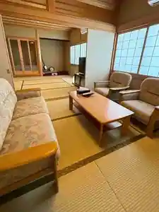
Guesthouse Sakaideki Maedate
Guesthouse in Kyo, Sakaide; 2-minute walk from Jrsakaide Station.
ホテルニューセンチュリー坂出
Hotel Nyusenchuri Sakaide
Hotel in Kume, Sakaide with parking and business travelers; 3-minute drive from Batsugunchushajomuryosakaidekita IC.
坂出グランドホテル
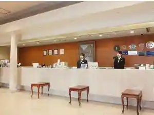
Sakaide Grand Hotel
Hotel in Nishiohamakita, Sakaide; 2-minute drive from Sakaidekita IC.
ビジネスホテル美咲
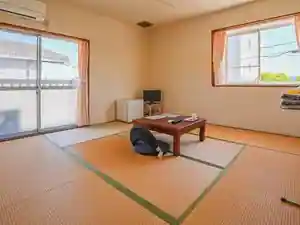
Business Hotel Misaki
Hotel in Nishiohamakita, Sakaide with business travelers.
美咲旅館
Misaki Ryokan
坂出プラザホテル
Sakaide Plaza Hotel
Hotel in Nishiohamakita, Sakaide with breakfast available.
旅館久米 ひまわり荘
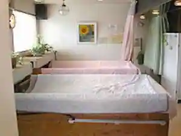
Ryokan Kume Himawari So
HOTEL R9 The Yard 坂出
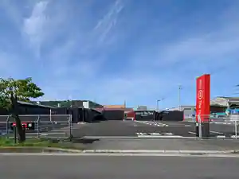
HOTEL R9 The Yard Sakaide
ＢＡＹ ＭＡＲＩＮＡ ログハウス
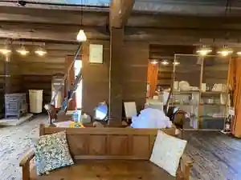
BAY MARINA Rogu House
がもう家
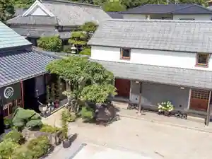
Gamo Ie
休暇村讃岐五色台
Kyukamura Sanuki Goshiki Dai
Inn in Oyatomi, Sakaide with scenic views.
Dining
讃岐うどん がもう

Sanuki Udon Gamo
日の出製麺所
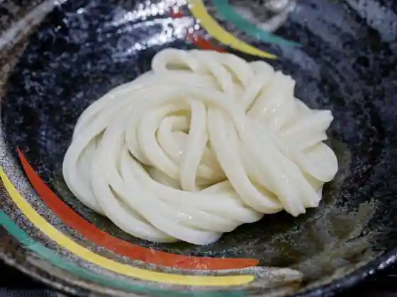
Hinode Seimen Tokoro
山下うどん
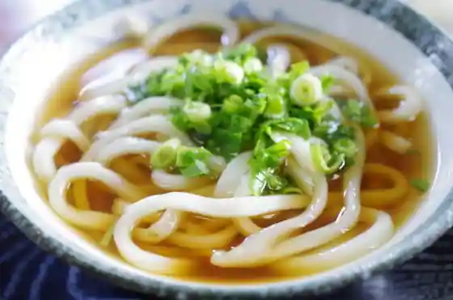
Yamashita Udon
やなぎ屋 西大浜店
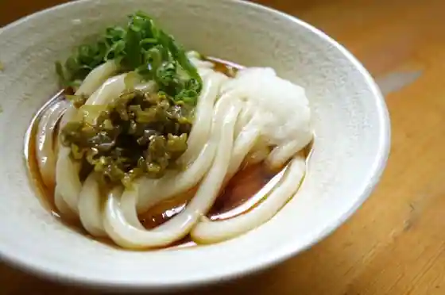
Yanagi Ya Nishi Ohama
とらや
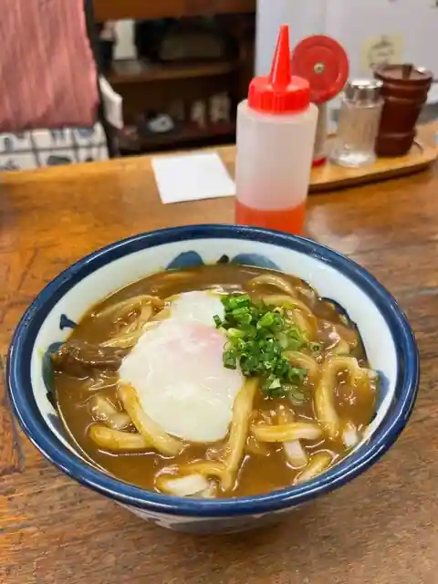
Toraya
まいどまいど
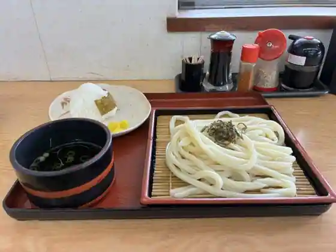
Maidomaido
めんや七福 別邸
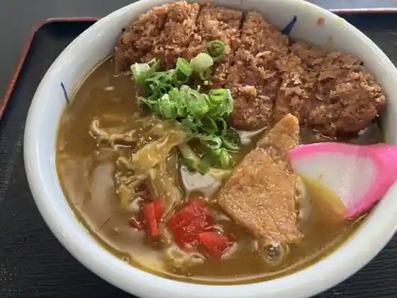
Menya Shichi Fuku Bettei
手打ちうどん かまや
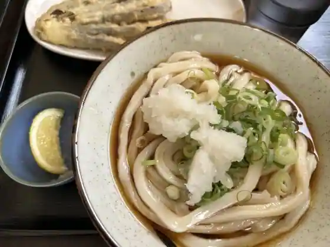
Teuchi Chiudon Kamaya
さぬきまるふじ
Sanukimarufuji
饂飩 こむぎや
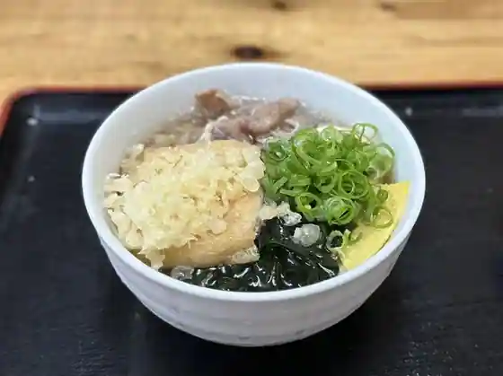
Udon Komugiya
手打うどん 町川
Teuchi Udon Machikawa
ウェリントン
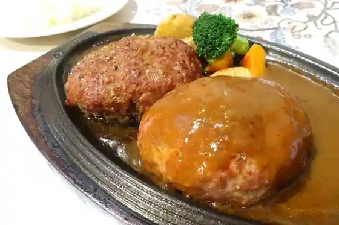
Uerinton
清水屋
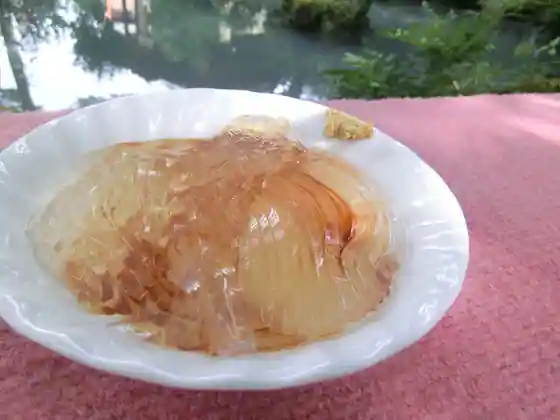
Shimizuya
ホクセイ
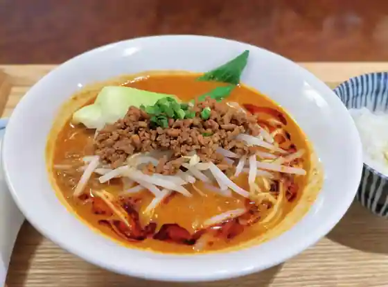
Hokusei
架け橋 夢うどん
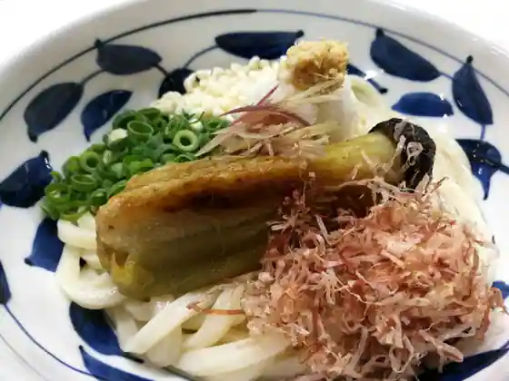
Kakehashi Yume Udon
食事処こめや
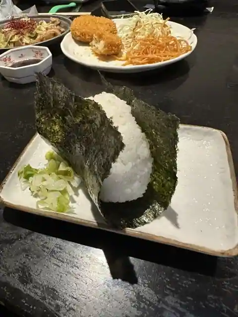
Shokuji Tokoro Komeya
五圓安
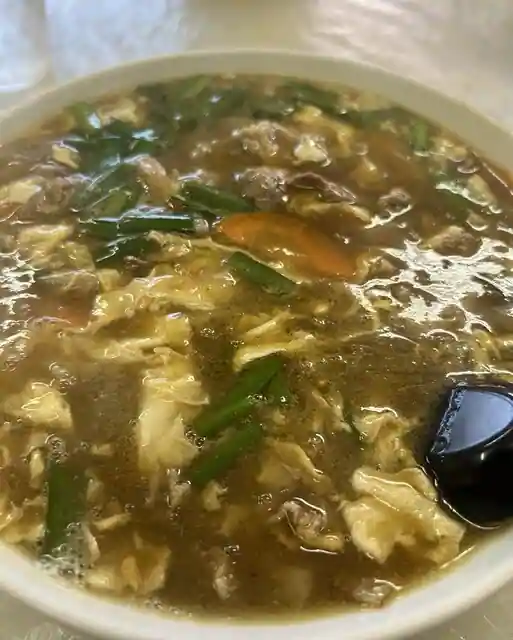
Go Enyasu
珈琲屋 松尾
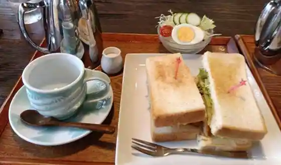
Coffee Ya Matsuo
ラーメンショップ 坂出店
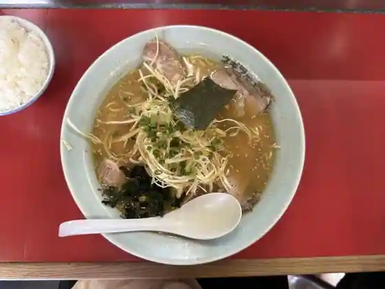
Ramen Shoppu Sakaide
ランドスケープ コーヒー37
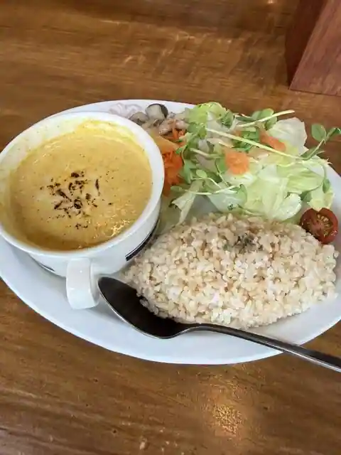
Randosukepu Coffee 37
与島PAフードコート
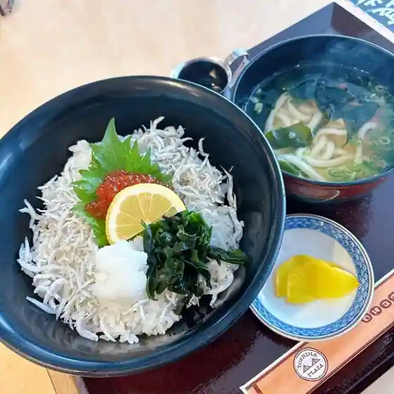
Yo Shima PA Fudokoto
アミチャーベーカリー
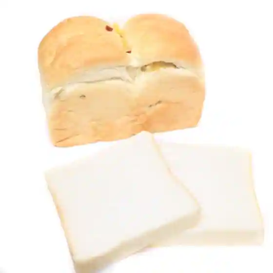
Amicha Bakery
ベンガル亭
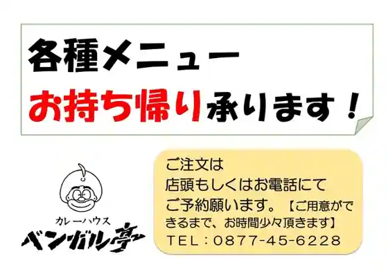
Bengaru Tei
焼肉山吉
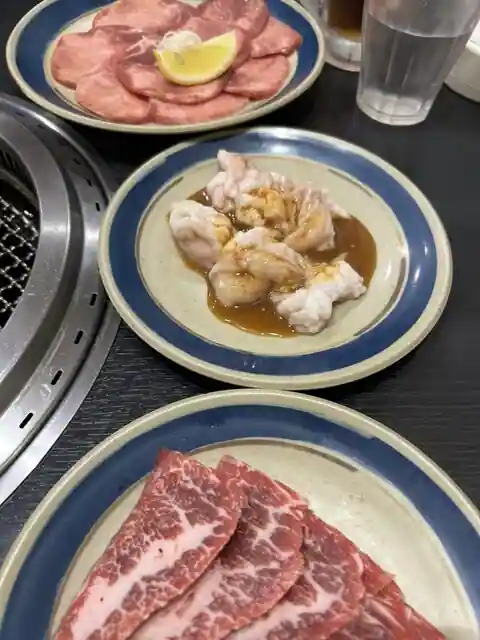
Yakiniku Yamakichi
Sights
Seto Bridge
Setoohashi Memorial Park
Setoohashi Tawa
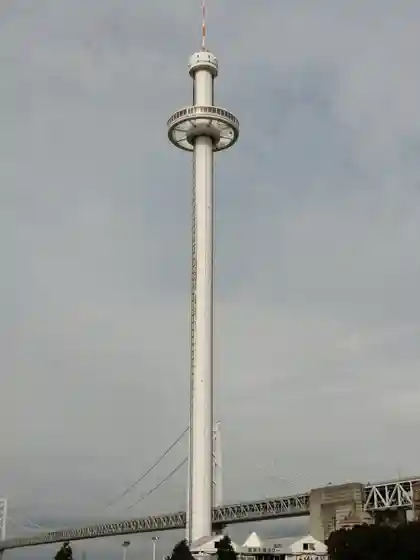
Higashiyama Kaii Setochi Art Museum
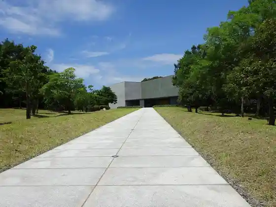
Yo Shima
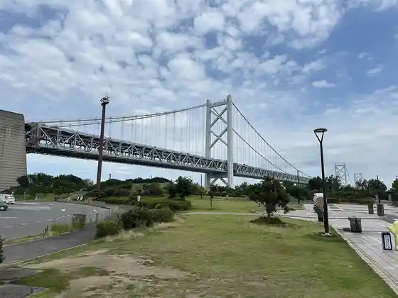
Nabeshima Lighthouse
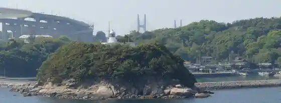
Iino Yama
Shiramine Tera
Saya Shima